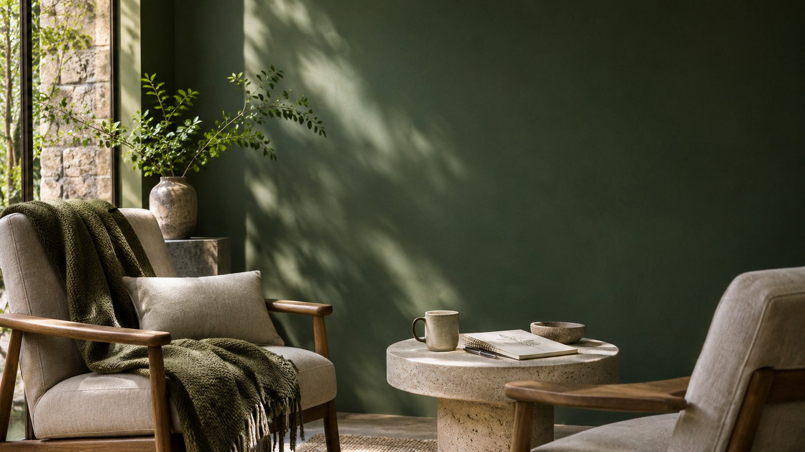

One-to-one coaching [location to be confirmed]
A clear place to begin.
Clear Ground Coaching is a one-to-one practice for people who want firmer footing: to see where they are, name what is in the way, and take a next step they can keep.
Coaching, not therapy or medical treatment.

Generated concept image
Fig. 1 The room, as imagined for a first conversation
Where you are now
Most people arrive with a lot going on and no clear picture of it. We start by describing where you actually are: what is working, what has gone flat, what you keep circling. No scoring and no labels. Just an honest map that you can see all of.
Nothing is rushed. A first conversation is for looking, and you decide how much to say.
A principle of the practice
You cannot choose a direction from a place you have not looked at.
What is in the way
Usually it is not one large obstacle. It is a few small ones that have become familiar. We name them plainly, then sort them into the ones that are yours to move and the ones that are not.
- The habits you stopped noticing
- The beliefs you treat as facts
- The things that are not yours to fix
This is coaching. It is not therapy or medical treatment, and it is not a substitute for either. [Scope and referral details to be confirmed]
Generated concept image
The next small step
We choose one step small enough to take this week. Not a plan for the year. One step with a day attached to it, and a note of what you expect to notice when you take it.
Between conversations you keep the step, and we look at what happened next time. [Session details to be confirmed]
A principle of the practice
If a step does not fit in an ordinary week, it is not yet small enough.
Firmer footing
Over time the steps add up to ground you can stand on. We look back at what changed, keep what worked, decide what comes next, and talk honestly about whether you still need us.
- How we meet
- Online or in person. [Session details to be confirmed]
- Investment
- [Price to be confirmed]
- Where
- [Location to be confirmed]
A principle of the practice
Good coaching should make itself less necessary.
A first conversation
Three short questions, one at a time. Each answer puts a marker on your line, and at the end you get a short note to bring with you. You do not have to type anything.
With JavaScript on, this section becomes a short reflective exercise: three prompts, a marker added to the illustrated line for each answer, and a note at the end. Nothing is sent, stored or booked, in this concept or in the exercise.